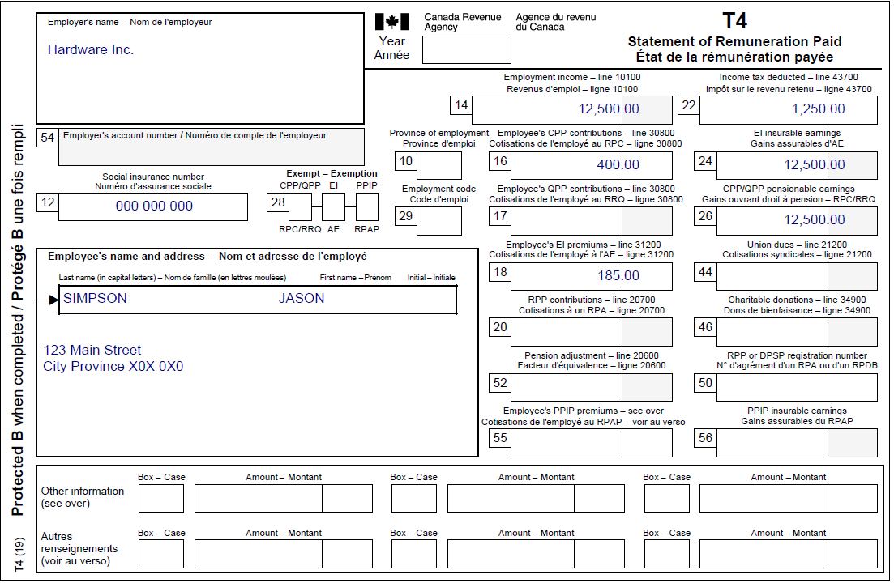
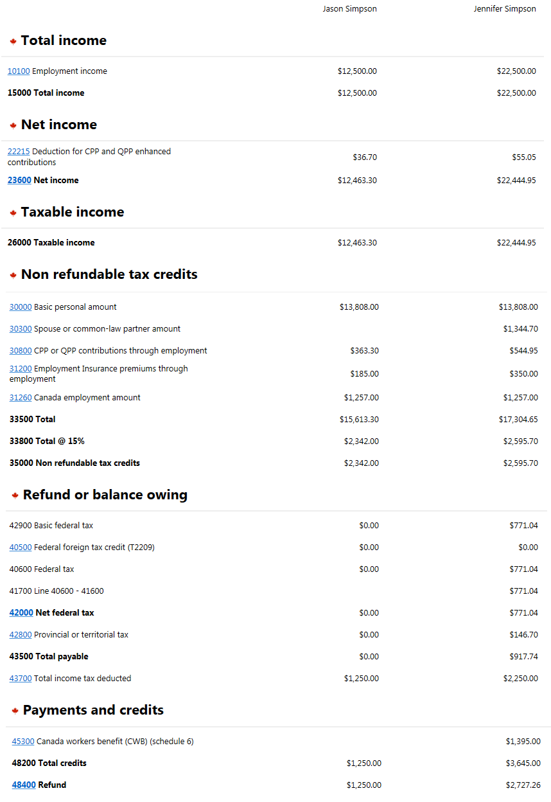

Incarcerated Individual with a spouse
Pre-test question
Sorry, that's incorrect.
An incarcerated individual becomes ineligible to receive GST/HST credit when they have been confined to a prison or similar institution for a period of 90 consecutive days or more that includes the first day of the quarterly payment month (July, October, January, April).
That's correct
An incarcerated individual becomes ineligible to receive GST/HST credit when they have been confined to a prison or similar institution for a period of 90 consecutive days or more that includes the first day of the quarterly payment month (July, October, January, April).
Instructions
- Open the UFile CVITP software
- Review the background information and slips required (tax slips, receipts, etc.)
- Enter all the necessary information into the required sections of UFile
- Once completed, compare your results with the solution provided
- Check out the takeaway points at the end
Background information
Situation
Jason was incarcerated on June 4, 2022, and will not be released before January 2028. Jason needs to file his return in order for his spouse, Jennifer, to continue receiving her GST/HST credit. Before Jason’s incarceration he was employed at Hardware Inc., and Jennifer is currently employed at Hardwire Inc.
Identification information
| Name | Jason Simpson |
|---|---|
| Social insurance number (SIN) | 000 000 000 |
| Address | 123 Main Street City, Province X0X 0X0 |
| Date of birth | April 22, 1977 |
| Marital status |
Married to: Jennifer Simpson DOB: May 22, 1977 |
Slips required
T4 - Statement of Remuneration Paid (Hardware Inc.) (for Jason)
Text version
T4 - Statement of Remuneration Paid
Protected B
Employer’s name: Hardware Inc.
Employee’s name and address:
Last name: Simpson
First name: Jason
123 Main Street
City, Province X0X 0X0
Box 12: Social insurance number: 000 000 000
Box 14: Employment income – line 10100: 12,500.00
Box 16: Employee’s CPP contributions – line 30800: 400.00
Box 18: Employee’s EI premiums – line 31200: 185.00
Box 22: Income tax deducted – line 43700: 1,250.00
Box 24: EI insurable earnings: 12,500.00
Box 26: CPP/QPP pensionable earnings: 12,500.00
T4 - Statement of Remuneration Paid (Hardware Inc.) (for Jennifer)

Text version
T4 - Statement of Remuneration Paid
Protected B
Employer’s name: Hardwire Inc.
Employee’s name and address:
Last name: Simpson
First name: Jennifer
123 Main Street
City, Province X0X 0X0
Box 12: Social insurance number: 000 000 000
Box 14: Employment income – line 10100: 22,500.00
Box 16: Employee’s CPP contributions – line 30800: 600.00
Box 18: Employee’s EI premiums – line 31200: 350.00
Box 22: Income tax deducted – line 43700: 2,250.00
Box 24: EI insurable earnings: 22,500.00
Box 26: CPP/QPP pensionable earnings: 22,500.00
Review your results
Text version
Jordan Simpson
Total income
10100 Employment income: $12,500.00
15000 Total income: $12,500.00
Net income
22215 Deduction for CPP and QPP enhanced contributions: $36.70
23600 Net income: $12,463.30
Taxable income
26000 Taxable income: $12,463.30
Non refundable tax credits
30000 Basic personal amount:$13,808.00
30300 Spouse or common-law partner amount:
30800 CPP or QPP contributions through employment: $363.30
31200 Employment Insurance premiums through employment: $185.00
31260 Canada employment amount: $1,257.00
33500 Total: $15,613.30
33800 Total @ 15%: $2,342.00
35000 Non refundable tax credits: $2,342.00
Refund or balance owing
42900 Basic federal tax: $0.00
40500 Federal foreign tax credit (T2209): $0.00
40600 Federal tax: $0.00
41700 Line 40600 – 41600:
42000 Net federal tax: $0.00
42800 Provincial or territorial tax: $0.00
43500 Total payable: $0.00
43700 Total income tax deducted: $1,250.00
Payments and credits
45300 Canada workers benefit (CWB) (Schedule 6):
48200 Total credits: $1,250.00
48400 Refund: $1,250.00
Jennifer Simpson
Total income
10100 Employment income: $22,500.00
15000 Total income: $22,500.00
Net income
22215 Deduction for CPP and QPP enhanced contributions: $55.05
23600 Net income: $22,444.95
Taxable income
26000 Taxable income: $22,444.95
Non refundable tax credits
30000 Basic personal amount: $13,808.00
30300 Spouse or common-law partner amount: $1,344.70
30800 CPP or QPP contributions through employment: $544.95
31200 Employment Insurance premiums through employment: $350.00
31260 Canada employment amount: $1,257.00
33500 Total: $17,304.65
33800 Total @ 15%: $2,595.70
35000 Non refundable tax credits: $2,595.70
Refund or balance owing
42900 Basic federal tax: $771.04
40500 Federal foreign tax credit (T2209): $0.00
40600 Federal tax: $771.04
41700 Line 40600 – 41600: $771.04
42000 Net federal tax: $771.04
42800 Provincial or territorial tax: $146.70
43500 Total payable: $917.74
43700 Total income tax deducted: $2,250.00
Payments and credits
45300 Canada workers benefit (CWB) (Schedule 6): $1,395.00
48200 Total credits: $3,645.00
48400 Refund: $2,727.26
Takeaway points
Steps to follow
- Review their background information and the required slips
- Complete the Spouse interview type by selecting Complete information (recommended) for the field What information will you provide for your spouse?
- From the Interview setup, in the Specific situations section, check the box next to Prison 2022 and check the box next to Employment income and employment insurance benefits (T4, T4E/RL-6) in the Employment and other benefits section
- Click Prison in 2022 in the left side menu. In the field Indicate if you were in prison for 90 days or more in 2021, select In prison on December 31, 2022 for more than 6 months
- Click T4 and employment income in the left side menu and click the + sign next to T4 income (earned in any province except Quebec). Enter the information from Jason’s T4 slip and repeat this step for Jennifer
Although you are only transmitting the return for Jason, you should provide complete information for Jennifer when completing his tax return. This will allow the software to determine and calculate the benefits and credits that Jason is entitled to while he is incarcerated.
Jason is not eligible for the Canada workers benefit (CWB) or the GST/HST credit because he was incarcerated for more than 90 consecutive days. By filing his return, Jason is taking the necessary steps to assist Jennifer in receiving the benefits and credits she is entitled to.
Jennifer is still entitled to the CWB and can receive the GST/HST credit for herself. She will not receive any CWB or GST/HST credits for Jason because he is incarcerated.